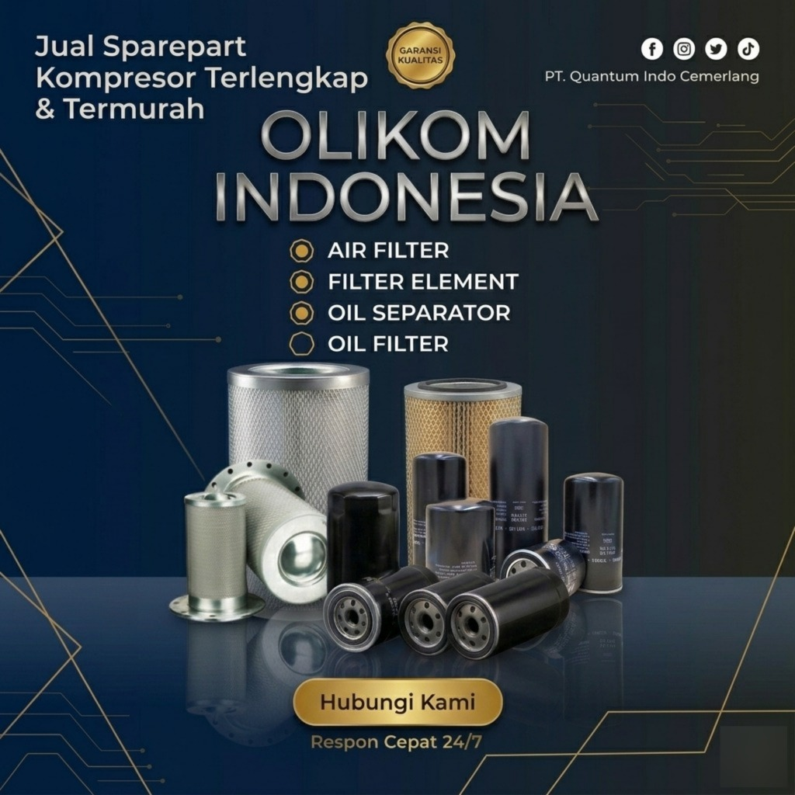
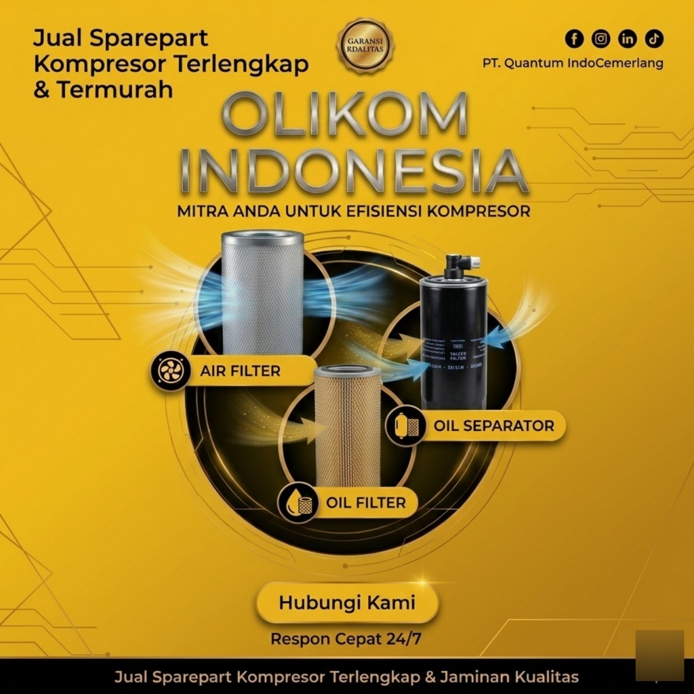
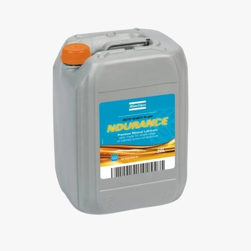

Lebih dari sekadar produk unggulan Oli Kompresor yang menjadi best-seller, Olikom Indonesia juga menyediakan kebutuhan Sparepart dan Unit Mesin Kompresor Udara terlengkap. Lindungi mesin Anda, tingkatkan efisiensi, dan kurangi biaya perawatan bersama kami.



Pilihan oli kompresor terbaik untuk performa maksimal mesin industri Anda.

Pelumas sintetis berbasis poliglikol yang dirancang khusus untuk mempertahankan performa puncak kompresor udara rotary screw.
Pesan via WhatsApp
Pelumas sintetis berperforma tinggi berbasis Polyalphaolefin (PAO) yang dirancang khusus untuk kompresor udara rotary screw merek Kaeser.
Pesan via WhatsApp
Pelumas campuran dari Polyalphaolefin (PAO) dan Ester, memberikan perlindungan optimal pada suhu ekstrem dengan masa pakai hingga 6.000 jam.
Pesan via WhatsApp